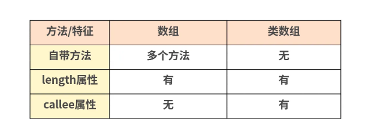

语言基础题
什么是变量提升（暂时性死区）
变量提升是 js 的执行上下文中会有一个创建阶段，创建阶段的时候就会确定函数的形参，函数环境会初始化创建 Arguments 对象，确定普通字面量形式的函数声明，变量声明，函数表达式声明
所以当运行的时候，即使输出语句现在定义之上也不会报错，但是使用 let 和 const 的时候，会有暂时性死区，使区块形成封闭的作用域。若在声明之前使用变量，就会报错。
let const var 的区别？什么是块级作用域？如何用？
- var
没有块级作用域的概念，可以跨块访问, 不能跨函数访问
有变量提升
- let
只能在块级作用域里访问，不能跨块访问，也不能跨函数访问
无变量提升
不可以重复声明。
- const
用来定义常量，使用时必须初始化(即必须赋值)
只能在块级作用域里访问，而且不能修改
无变量提升
不可以重复声明。
最初在 JS 中作用域有：全局作用域、函数作用域。没有块作用域的概念。
ES6 中新增了块级作用域。块作用域由 { } 包括，if 语句和 for 语句里面的 { } 也属于块作用域。
在以前没有块作用域的时候，在 if 或者 for 循环中声明的变量会泄露成全局变量，其次就是 { } 中的内层变量可能会覆盖外层变量。块级作用域的出现解决了这些问题。
JS 的基本数据类型有哪些？基本数据类型和引用数据类型的区别
数据类型整体上来讲可以分为两大类：基本类型和引用数据类型
基本数据类型，一共有 8 种：
string，number，boolean，undefined，null，bigInt,symbol
其中 symbol、bigInt 类型是在 ES6 及后续版本里面新添加的基本数据类型。
引用数据类型，就只有 1 种：
object
基本数据类型的值又被称之为原始值或简单值，而引用数据类型的值又被称之为复杂值或引用值。
两者的区别：
- 访问方式,比较方式
- 基本数据类型：访问到的是值
- 引用数据类型：访问到的是引用地址
- 变量赋值
- 基本数据类型：赋值的是值
- 引用数据类型：赋值的是地址
- 存放位置
- 基本数据类型：在内存中占据固定大小，直接存储在栈内存中的数据
- 引用数据类型：在栈内存中存储了指针，这个指针指向堆内存中的地址，真实的数据存放在堆内存里。
- 值的可变性
- 基本数据类型： 值不可变（表面重新赋值，但实际是开辟新的栈内存，销毁旧的栈内存）
- 引用数据类型：值可变，可以修改对象的属性
NaN 是什么
NaN 的全称为 Not a Number，表示非数，或者说不是一个数。虽然 NaN 表示非数，但是它却属于 number 类型。
NaN 有两个特点：
- 任何涉及 NaN 的操作都会返回 NaN
- NaN 和任何值都不相等，包括它自己本身
undefined==null 返回的结果是什么？undefined 与 null 的区别在哪？
返回 true
这两个值都表示“无”的意思。
undefined
访问某个不存在的或者没有赋值的变量，得到 undefined
变量声明了但没有初始化的变量，得到 undefined
undefined 转化数字为 NaN
函数没有返回值时，默认返回 undefined
null
null 值表示空，null 不能通过 Javascript 来自动赋值
转化数字为 0
对象原型链的终点
对变量进行类型判断的方式有哪些
- typeof
typeof 是一个操作符，其右侧跟一个一元表达式，并返回这个表达式的数据类型。返回的结果用该类型的字符串(全小写字母)形式表示，包括以下 8 种：number、boolean、string、undefined、symbol、bigint、object、function
typeof null === ‘object’
- instanceof
instanceof 是用来判断 A 是否为 B 的实例，表达式为：A instanceof B，如果 A 是 B 的实例，则返回 true,否则返回 false。 在这里需要特别注意的是：instanceof 检测的是原型。
用一段伪代码来模拟其内部执行过程：
instanceof (A,B) = {
varL = A.__proto__;
varR = B.prototype;
if(L === R) {
// A的内部属性 __proto__ 指向 B 的原型对象
return true;
}
return false;
}
从上述过程可以看出，当 A 的 proto 指向 B 的 prototype 时，就认为 A 就是 B 的实例。
需要注意的是，instanceof 只能用来判断两个对象是否属于实例关系， 而不能判断一个对象实例具体属于哪种类型。
例如：[ ] instanceof Object 返回的也会是 true。
- constructor
每个 JavaScript 对象都有一个 constructor 属性，指向创建该对象的构造函数
当一个函数被定义时，JS 引擎会为函数添加 prototype 原型，然后再在 prototype 上添加一个 constructor 属性，并让其指向函数的引用。
const num = 123;
const str = "hello";
const arr = [1, 2, 3];
const obj = { key: "value" };
const func = function () {};
console.log(num.constructor === Number); // true
console.log(str.constructor === String); // true
console.log(arr.constructor === Array); // true
console.log(obj.constructor === Object); // true
console.log(func.constructor === Function); // true
- toString
toString( ) 是 Object 的原型方法，调用该方法，默认返回当前对象的 [[Class]] 。这是一个内部属性，其格式为 [object Xxx] ，其中 Xxx 就是对象的类型。
对于 Object 对象，直接调用 toString( ) 就能返回 [object Object] 。而对于其他对象，则需要通过 call / apply 来调用才能返回正确的类型信息（因为其他对象重写了 Object 的 toString 方法）。例如：
Object.prototype.toString.call('') ; // [object String]
Object.prototype.toString.call(1) ; // [object Number]
Object.prototype.toString.call(true) ;// [object Boolean]
Object.prototype.toString.call(Symbol());//[object Symbol]
Object.prototype.toString.call(undefined) ;// [object Undefined]
Object.prototype.toString.call(null) ;// [object Null]
类型转换的方法与转换规则
显性转换
- 转换为数值类型：Number()，parseInt()，parseFloat()
- 转换为布尔类型：Boolean()
- 转换为字符串类型：toString()，String()
隐性转换
var n = +a; // 不管a是啥，都会被转换成数字，保存到n中
var s = a + ""; // 不管a是啥，都会被转换成字符串，保存到s中
var b = !!a; // 不管a是啥，都会被转换成boolean，保存到b中
强制转换字符串规则
- 字符串按原样返回。
- undefined 转换成
<font style="color:rgb(27, 27, 27);">"undefined"</font>。 - null 转换成
<font style="color:rgb(27, 27, 27);">"null"</font>。 <font style="color:rgb(27, 27, 27);">true</font>转换成<font style="color:rgb(27, 27, 27);">"true"</font>；<font style="color:rgb(27, 27, 27);">false</font>转换成<font style="color:rgb(27, 27, 27);">"false"</font>。- Symbol 抛出 TypeError。
- 对于对象，先调用
<font style="color:rgb(27, 27, 27);">toString()</font>，再<font style="color:rgb(27, 27, 27);">valueOf()</font>方法将其转换为原始值。
强制转换数字规则
- 数字按原样返回。
- 字符串必须全是数字，才会返回数字，否则 NaN
- undefined 转换成 NaN。
- null 转换成
<font style="color:rgb(27, 27, 27);">0</font>。 <font style="color:rgb(27, 27, 27);">true</font>转换成<font style="color:rgb(27, 27, 27);">1</font>；<font style="color:rgb(27, 27, 27);">false</font>转换成 0- Symbol 抛出 TypeError。
- 对于对象，先调用
<font style="color:rgb(27, 27, 27);">valueOf()</font>，再<font style="color:rgb(27, 27, 27);">toString()</font>方法将其转换为原始值。
parseInt()，parseFloat()如果第一个字符不能转换为数字，<font style="color:rgb(27, 27, 27);">parseInt</font> 会返回 <font style="color:rgb(27, 27, 27);">NaN</font>,返回会返回第一个数字
强制转换布尔规则
- undefined
- null
- 0（包含-0 和+0）
- NaN
- ‘’（空字符串）
除了这五个，全部转换为 true
== 和 === 的区别是什么
== 代表相同， === 代表严格相同（数据类型和值都相等）。
== 比较时，先检查两个操作数数据类型，如果相同，则进行===比较，如果不同，则愿意为你进行一次类型转换，转换成相同类型后再进行===比较。
对于非相等的比较，都是原始，就转化为数字，如果有对象就对象转数字
这里需要注意与 NaN 的比较。任何值（包括 NaN 本身）与 NaN 使用非相等运算符进行比较，返回的都是 false。
null == undefined,除此之外，null 和 undefined 和任何不是自身都不相等
=== 比较时，如果类型不同，直接就是 false，类型相同比较值
Object.is 方法比较的是什么
Object.is 方法是 ES6 新增的用来比较两个值是否严格相等的方法，与 === (严格相等)的行为基本一致。不过有两处不同：
- +0 不等于 -0。
- NaN 等于自身。
所以可以将 Object.is 方法看作是加强版的严格相等。
函数柯里化
柯里化（currying）又称部分求值。一个柯里化的函数首先会接受一些参数，接受了这些参数之后，该函数并不会立即求值，而是继续返回另外一个函数，刚才传入的参数在函数形成的闭包中被保存起来。待到函数被真正需要求值的时候，之前传入的所有参数都会被一次性用于求值。
举个例子，就是把原本：
function(arg1,arg2) 变成 function(arg1)(arg2)
new 操作符都做了哪些事,实现 new
new 运算符创建一个用户定义的对象类型的实例或具有构造函数的内置对象的实例。
new 关键字会进行如下的操作：
步骤 1：创建一个空的简单 JavaScript 对象，即 { } ;
步骤 2：链接该对象到另一个对象（即设置该对象的原型对象）；
步骤 3：将步骤 1 新创建的对象作为 this 的上下文；
步骤 4：如果该函数没有返回对象，则返回 this。
对一个构造函数实例化后， 它的原型链指向什么
指向该构造函数实例化出来对象的原型对象。
对于构造函数来讲，可以通过 prototype 访问到该对象。
对于实例对象来讲，可以通过隐式属性 proto 来访问到。
通过 new 的方式创建对象和通过字面量创建有什么区别？
通过 new 的方式创建对象和通过字面量创建的对象，区别在于 new 出来的对象的原型对象为构造函数.prototype，而字面量对象的原型对象为 Object.prototype
function Computer() {}
var c = new Computer();
var d = {};
console.log(c.__proto__ === Computer.prototype); // true
console.log(d.__proto__ === Object.prototype); // true
箭头函数有哪些特点，与普通函数的不同点
箭头函数主要解决了 this 的指向问题，在 ES5 时代，一旦对象的方法里面又存在函数，则 this 的指向往往会让开发人员抓狂。
- 更简洁的语法
- 只有一个形参就不需要用括号括起来
- 如果函数体只有一行，就不需要放到一个块中
- 如果 return 语句是函数体内唯一的语句，就不需要 return 关键字
- 箭头函数没有自己的 this，arguments，super
- 箭头函数 this 只会从自己的作用域链的上一层继承 this。
和普通函数的区别
- 外形不同。箭头函数使用箭头定义，普通函数中没有
- 箭头函数都是匿名函数，不具有 prototype 原型对象。而普通函数具有 prototype 原型对象。
- 箭头函数不能用于构造函数，不能使用 new，不具有 new.target，不具有 super（普通函数可以用于构造函数，以此创建对象实例）
- 箭头函数中 this 的指向不同，在普通函数中，this 总是指向调用它的对象，如果用作构造函数，this 指向创建的对象实例。 箭头函数本身不创建 this，也可以说箭头函数本身没有 this，但是它在声明时可以捕获其所在上下文的 this 供自己使用（继承父执行上下文里面的 this,他的 this 指向是静态的）
- 每一个普通函数调用后都具有一个 arguments 对象，用来存储实际传递的参数。但是箭头函数并没有此对象。取而代之用…rest 参数来解决。
js 继承
共有四种继承方式：原型链继承，构造函数继承，伪经典继承，圣杯继承
原型链继承
function Parent() {
this.property = true;
}
Parent.prototype.getParentValue = function () {
return this.property;
};
function Child() {}
Child.prototype = new Parent();
const child = new Child();
console.log(child.getParentValue()); // true
重点：让新实例的原型等于父类的实例。
特点：实例可继承的属性有：实例的构造函数的属性，父类构造函数属性，父类原型的属性。（新实例不会继承父类实例的属性！）
缺点：
- 1、新实例无法向父类构造函数传参。
- 2、继承单一。
- 3、所有新实例都会共享父类实例的属性。（原型上的属性是共享的，一个实例修改了原型属性，另一个实例的原型属性也会被修改！）
借用构造函数继承
function Parent(value) {
this.property = value;
}
function Child(value) {
Parent.call(this, value);
}
const child = new Child(true);
console.log(child.property); // true
- 重点：用 call( ) 和 apply( ) 将父类构造函数引入子类函数（在子类函数中做了父类函数的自执行（复制））
- 特点：
- 1、只继承了父类构造函数的属性，没有继承父类原型的属性。
- 2、解决了原型链继承缺点 1、2、3。
- 3、可以继承多个构造函数属性（call 多个）。
- 4、在子实例中可向父实例传参。
- 缺点：
- 1、只能继承父类构造函数的属性。
- 2、无法实现构造函数的复用。（每次用每次都要重新调用）
- 3、每个新实例都有父类构造函数的副本，臃肿。
伪经典继承（组合继承）
function Parent(value) {
this.property = value;
}
Parent.prototype.getParentValue = function() {
return this.property;
};
function Child(value) {
Parent.call(this, value);
}
Child.prototype = new Parent();
Child.prototype.constructor = Child;
const child = new Child(true);
console.log(child.getParentValue()); // true
该优点：
- 可以向父类构造函数传参。
- 父类方法可以复用。
- 每个实例都有自己独立的属性
圣杯继承
function inheritPrototype(child, parent) {
const prototype = Object.create(parent.prototype);
prototype.constructor = child;
child.prototype = prototype;
}
function Parent(value) {
this.property = value;
}
Parent.prototype.getParentValue = function() {
return this.property;
};
function Child(value) {
Parent.call(this, value);
}
inheritPrototype(Child, Parent);
const child = new Child(true);
console.log(child.getParentValue()); // true
- 高效实现继承，只调用一次父类构造函数。
- 保持原型链的纯净，避免不必要的属性。
ES6 新增了 extends 关键字，直接使用该关键字就能够实现继承。
他是基于原型链继承的
原型链继承：
- 在 JavaScript 中，每个对象都有一个原型链，通过原型链来查找属性和方法。继承实际上是通过原型链机制来实现的。
- 当子类创建实例时，它的原型链上会有父类的原型，因此子类实例可以访问父类的方法。
类和构造函数的关系：
- 在 JavaScript 内部，类本质上还是函数（构造函数），只不过
class语法让它们更加易于使用和理解。 - 使用
class声明类时，JavaScript 引擎会自动创建一个与类名相同的函数，并将类的所有方法添加到这个函数的原型中。
手写 extends
function extend(child, parent) {
// 创建一个空函数 F，作为中介
var F = function() {};
// 将子类的原型指向一个父类的实例
F.prototype = parent.prototype;
// 实例化 F，并将结果赋给子类的原型
child.prototype = new F();
// 将子类的构造函数指回自己
child.prototype.constructor = child;
}
// 示例用法
function Animal(name) {
this.name = name;
}
Animal.prototype.speak = function() {
console.log(`${this.name} makes a noise.`);
};
function Dog(name) {
// 调用父类构造函数
Animal.call(this, name);
}
// 使用 extend 函数实现继承
extend(Dog, Animal);
// 覆盖父类方法
Dog.prototype.speak = function() {
console.log(`${this.name} barks.`);
};
// 创建实例并调用方法
var animal = new Animal('Animal');
animal.speak(); // 输出: Animal makes a noise.
var dog = new Dog('Dog');
dog.speak(); // 输出: Dog barks.
解释：
**extend**** 函数**：extend函数接收两个参数child和parent，分别代表子类和父类。- 创建一个空的函数
F，并将F.prototype指向父类的原型对象，这样F函数的实例就可以继承父类的方法和属性。 - 将子类的原型
child.prototype设置为new F()的实例，从而实现了子类继承父类的原型。 - 最后，将子类的构造函数指回自己，确保子类的实例可以通过
new关键字正确创建。
- 示例用法：
- 定义
Animal构造函数和speak方法，作为父类。 - 定义
Dog构造函数，并通过Animal.call(this, name);调用父类构造函数，从而继承父类的属性。 - 使用
extend函数将Dog类继承自Animal类。 - 在
Dog.prototype上定义speak方法，覆盖父类的speak方法。
- 定义
- 实例化和调用：
- 创建
Animal和Dog的实例，并调用其方法，验证继承和方法覆盖的正确性。
- 创建
这个 extend 函数简单地演示了如何在 JavaScript 中手动实现类似 ES6 中 class 和 extends 的继承功能。在实际应用中，为了支持更复杂的继承链和更多的特性，可能需要更复杂的实现方式，但基本的原理与这个示例是类似的。
promise.all 方法的使用场景？数组中必须每一项都是 promise 对象吗？不是 promise 对象会如何处理 ？
promise.all(promiseArray) 方法是 promise 对象上的静态方法，该方法的作用是将多个 promise 对象实例包装，生成并返回一个新的 promise 实例。
此方法在集合多个 promise 的返回结果时很有用。
返回值将会按照参数内的 promise 顺序排列，而不是由调用 promise 的完成顺序决定。
promise.all 的特点
接收一个 Promise 实例的数组或具有 Iterator 接口的对象
如果元素不是 Promise 对象，则使用 Promise.resolve 转成 Promise 对象
如果全部成功，状态变为 resolved，返回值将组成一个数组传给回调
如果有一个失败，状态就变为 rejected，返回值将直接传递给回调 all( )的返回值，也是新的 promise 对象
promise 的 all、race。请说下这两者的区别
promise.all 方法参数是一个 promise 的数组,只有当所有的 promise 都完成并返回成功，才会调用 resolve，当有一个失败，都会进 catch，被捕获错误，promise.all 调用成功返回的结果是每个 promise 单独调用成功之后返回的结果组成的数组,如果调用失败的话，返回的则是第一个 reject 的结果
promise.race 也会调用所有的 promise，返回的结果则是所有 promise 中最先返回的结果，不关心是成功还是失败。
async 与 await 的作用
async 是一个修饰符，async 定义的函数会默认的返回一个 Promise 对象 resolve 的值，因此对 async 函数可以直接进行 then 操作，返回的值即为 then 方法的传入函数。
await 关键字只能放在 async 函数内部， await 关键字的作用就是获取 Promise 中返回的内容， 获取的是 Promise 函数中 resolve 或者 reject 的值。
async 函数表示函数里面可能会有异步方法，await 后面跟一个表达式，async 方法执行时，遇到 await 会立即执行表达式，然后把表达式后面的代码放到微任务队列里，让出执行栈让同步代码先执行。
async 函数只是 promise 的语法糖，它的底层实际使用的是 generator，而 generator 又是基于 promise 的。实际上，在 babel 编译 async 函数的时候，也会转化成 generator 函数，并使用自动执行器来执行它。
深拷贝与浅拷贝
- 浅拷贝：只是拷贝了基本类型的数据，而引用类型数据，复制后也是会发生引用，我们把这种拷贝叫做浅拷贝（浅复制）浅拷贝只复制指向某个对象的指针，而不复制对象本身，新旧对象还是共享同一块内存。
- 深拷贝：在堆中重新分配内存，并且把源对象所有属性都进行新建拷贝，以保证深拷贝的对象的引用图不包含任何原有对象或对象图上的任何对象，拷贝后的对象与原来的对象是完全隔离，互不影响。
浅拷贝方法
- 直接赋值
- Object.assign 方法：可以把任意多个的源对象自身的可枚举属性拷贝给目标对象，然后返回目标对象。当拷贝的 object 只有一层的时候，是深拷贝，但是当拷贝的对象属性值又是一个引用时，换句话说有多层时，就是一个浅拷贝。
- ES6 扩展运算符，当 object 只有一层的时候，也是深拷贝。有多层时是浅拷贝。
- Array.prototype.concat 方法
- Array.prototype.slice 方法
深拷贝方法
- JSON.parse(JSON.stringify)：用 JSON.stringify 将对象转成 JSON 字符串，再用 JSON.parse 方法把字符串解析成对象，一去一来，新的对象产生了，而且对象会开辟新的栈，实现深拷贝。这种方法虽然可以实现数组或对象深拷贝，但不能处理函数。
- 手写深拷贝
垃圾回收与内存泄漏
常见内存泄漏以及解决方案
- 意外的全局变量
Js 处理未定义变量的方式比较宽松：未定义的变量会在全局对象创建一个新变量。在浏览器中，全局对象是 window。
function foo(arg) {
bar = "this is a hidden global variable"; //等同于window.bar="this is a hidden global variable"
this.bar2= "potential accidental global";//这里的this 指向了全局对象（window）,等同于window.bar2="potential accidental global"
}
解决方法：在 JavaScript 程序中添加，开启严格模式’use strict’，可以有效地避免上述问题。
注意：那些用来临时存储大量数据的全局变量，确保在处理完这些数据后将其设置为 null 或重新赋值。与全局变量相关的增加内存消耗的一个主因是缓存。缓存数据是为了重用，缓存必须有一个大小上限才有用。高内存消耗导致缓存突破上限，因为缓 存内容无法被回收。
- 循环引用
在 js 的内存管理环境中，对象 A 如果有访问对象 B 的权限，叫做对象 A 引用对象 B。引用计数的策略是将“对象是否不再需要”简化成“对象有没有其他对象引用到它”，如果没有对象引用这个对象，那么这个对象将会被回收 。
let obj1 = { a: 1 }; // 一个对象（称之为 A）被创建，赋值给 obj1，A 的引用个数为 1
let obj2 = obj1; // A 的引用个数变为 2
obj1 = 0; // A 的引用个数变为 1
obj2 = 0; // A 的引用个数变为 0，此时对象 A 就可以被垃圾回收了
但是引用计数有个最大的问题： 循环引用。
function func() {
let obj1 = {};
let obj2 = {};
obj1.a = obj2; // obj1 引用 obj2
obj2.a = obj1; // obj2 引用 obj1
}
当函数 func 执行结束后，返回值为 undefined，所以整个函数以及内部的变量都应该被回收，但根据引用计数方法，obj1 和 obj2 的引用次数都不为 0，所以他们不会被回收。要解决循环引用的问题，最好是在不使用它们的时候手工将它们设为空。上面的例子可以这么做：
obj1 = null;
obj2 = null;
- 被遗忘的计时器和回调函数
let someResource = getData();
setInterval(() => {
const node = document.getElementById('Node');
if(node) {
node.innerhtml = JSON.stringify(someResource));
}
}, 1000);
上面的例子中，我们每隔一秒就将得到的数据放入到文档节点中去。
但在 setInterval 没有结束前，回调函数里的变量以及回调函数本身都无法被回收。那什么才叫结束呢？
就是调用了 clearInterval。如果回调函数内没有做什么事情，并且也没有被 clear 掉的话，就会造成内存泄漏。
不仅如此，如果回调函数没有被回收，那么回调函数内依赖的变量也没法被回收。上面的例子中，someResource 就没法被回收。同样的，setTiemout 也会有同样的问题。所以，当不需要 interval 或者 timeout 时，最好调用 clearInterval 或者 clearTimeout。
- DOM 泄漏
在 JS 中对 DOM 操作是非常耗时的。因为 JavaScript/ECMAScript 引擎独立于渲染引擎，而 DOM 是位于渲染引擎，相互访问需要消耗一定的资源。 而 IE 的 DOM 回收机制便是采用引用计数的，以下主要针对 IE 而言的。
a. 没有清理的 DOM 元素引用
var refA = document.getElementById('refA');
document.body.removeChild(refA);
// refA 不能回收，因为存在变量 refA 对它的引用。将其对 refA 引用释放，但还是无法回收 refA。
解决办法：refA = null;
b. 给 DOM 对象添加的属性是一个对象的引用
var MyObject = {};
document.getElementById('mydiv').myProp = MyObject;
解决方法： 在 window.onunload 事件中写上: document.getElementById(‘mydiv’).myProp = null;
c. DOM 对象与 JS 对象相互引用
function Encapsulator(element) {
this.elementReference = element;
element.myProp = this;
}
new Encapsulator(document.getElementById('myDiv'));
解决方法： 在 onunload 事件中写上: document.getElementById(‘myDiv’).myProp = null;
d. 给 DOM 对象用 attachEvent 绑定事件
function doClick() {}
element.attachEvent("onclick", doClick);
解决方法： 在 onunload 事件中写上: element.detachEvent(‘onclick’, doClick);
e. 从外到内执行 appendChild。这时即使调用 removeChild 也无法释放
var parentDiv = document.createElement("div");
var childDiv = document.createElement("div");
document.body.appendChild(parentDiv);
parentDiv.appendChild(childDiv);
解决方法： 从内到外执行 appendChild:
var parentDiv = document.createElement("div");
var childDiv = document.createElement("div");
parentDiv.appendChild(childDiv);
document.body.appendChild(parentDiv);
- JS 的闭包
值得注意的是闭包本身不会造成内存泄漏，但闭包过多很容易导致内存泄漏。闭包会造成对象引用的生命周期脱离当前函数的上下文，如果闭包如果使用不当，可以导致环形引用（circular reference），类似于死锁，只能避免，无法发生之后解决，即使有垃圾回收也还是会内存泄露。
- console
控制台日志记录对总体内存配置文件的影响可能是许多开发人员都未想到的极其重大的问题。记录错误的对象可以将大量数据保留在内存中。注意，这也适用于：
(1) 在用户键入 JavaScript 时，在控制台中的一个交互式会话期间记录的对象。
(2) 由 console.log 和 console.dir 方法记录的对象。
ES6 新增哪些东西
ES6 新增内容众多，这里列举出一些关键的以及平时常用的新增内容：
- 箭头函数
- 字符串模板
- 支持模块化（import、export）
- 类（class、constructor、extends）
- let、const 关键字
- 新增一些数组、字符串等内置构造函数方法，例如 Array.from、Array.of 、Math.sign 等
- 新增一些语法，例如扩展操作符、解构、函数默认参数等
- 新增一种基本数据类型 Symbol
- 新增元编程相关，例如 proxy、Reflect
- Set 和 Map 数据结构
- Promise
- Generator 生成器
Set、Map、WeakSet 和 WeakMap 的区别
Set
- 成员唯一、无序且不重复
- 键值与键名是一致的（或者说只有键值，没有键名）
- 可以遍历，方法有 add, delete,has
WeakSet
- 成员都是对象
- 成员都是弱引用，可以被垃圾回收机制回收，可以用来保存 DOM 节点，不容易造成内存泄漏
- 不能遍历，方法有 add, delete,has
Map
- 本质上是健值对的集合，类似集合
- 可以遍历，方法很多，可以跟各种数据格式转换
WeakMap
- 只接受对象作为健名（null 除外），不接受其他类型的值作为健名
- 键名是弱引用，键值可以是任意的，键名所指向的对象可以被垃圾机制回收，此时键名是无效的
- 不能遍历，方法有 get、set、has、delete
weakmap、weakset
WeakSet 对象是一些对象值的集合, 并且其中的每个对象值都只能出现一次。在 WeakSet 的集合中是唯一的
它和 Set 对象的区别有两点:
- 与 Set 相比，WeakSet 只能是对象的集合，而不能是任何类型的任意值。
- WeakSet 持弱引用：集合中对象的引用为弱引用。 如果没有其他的对 WeakSet 中对象的引用，那么这些对象会被当成垃圾回收掉。 这也意味着 WeakSet 中没有存储当前对象的列表。 正因为这样，WeakSet 是不可枚举的。
WeakMap 对象也是键值对的集合。它的键必须是对象类型，值可以是任意类型。它的键被弱保持，也就是说，当其键所指对象没有其他地方引用的时候，它会被 GC 回收掉。WeakMap 提供的接口与 Map 相同。
与 Map 对象不同的是，WeakMap 的键是不可枚举的。不提供列出其键的方法。列表是否存在取决于垃圾回收器的状态，是不可预知的。
防抖和节流
我们在平时开发的时候，会有很多场景会频繁触发事件，比如说搜索框实时发请求，onmousemove、resize、onscroll 等，有些时候，我们并不能或者不想频繁触发事件，这时候就应该用到函数防抖和函数节流。
函数防抖(debounce):指的是短时间内多次触发同一事件，只执行最后一次，或者只执行最开始的一次，中间的不执行。
函数节流(throttle):指连续触发事件但是在 n 秒中只执行一次函数。即 2n 秒内执行 2 次… 。节流如字面意思，会稀释函数的执行频率。
proxy 实现代理和 Object.defineProperty 的区别
两者的区别总结如下：
- 代理原理：Object.defineProperty 的原理是通过将数据属性转变为存取器属性的方式实现的属性读写代理。而 Proxy 则是因为这个内置的 Proxy 对象内部有一套监听机制，在传入 handler 对象作为参数构造代理对象后，一旦代理对象的某个操作触发，就会进入 handler 中对应注册的处理函数，此时我们就可以有选择的使用 Reflect 将操作转发被代理对象上。
- 代理局限性：Object.defineProperty 始终还是局限于属性层面的读写代理，对于对象层面以及属性的其它操作代理它都无法实现。鉴于此，由于数组对象 push、pop 等方法的存在，它对于数组元素的读写代理实现的并不完全。而使用 Proxy 则可以很方便的监视数组操作。
- 自我代理：Object.defineProperty 方式可以代理到自身（代理之后使用对象本身即可），也可以代理到别的对象身上（代理之后需要使用代理对象）。Proxy 方式只能代理到 Proxy 实例对象上。这一点在其它说法中是 Proxy 对象不需要侵入对象就可以实现代理，实际上 Object.defineProperty 方式也可以不侵入。
Proxy 的优势如下:
- Object.defineProperty 只能劫持对象的属性,因此我们需要对每个对象的每个属性进行遍历，而 Proxy 可以直接监听对象而非属性；
- Object.defineProperty 无法监控到数组下标的变化，而 Proxy 可以直接监听数组的变化；
- Proxy 有多达 13 种拦截方法；
- Proxy 作为新标准将受到浏览器厂商重点持续的性能优化；
Object.defineProperty 和 ES6 的 Proxy 有什么区别？
1、Object.defineproperty
可以用于监听对象的数据变化
缺点：
- 无法监听数组变化
- 只能劫持对象的属性，属性值也是对象那么需要深度遍历
2、proxy ：可以理解为在被劫持的对象之前 加了一层拦截
let proxy = new Proxy(
{},
{
get(obj, prop) {
return obj[prop];
},
set(obj, prop, val) {
obj[prop] = val;
},
}
);
- proxy 返回的是一个新对象， 可以通过操作返回的新的对象达到目的
- proxy 有多达 13 种拦截方法
总结：
- Object.defineProperty 无法监控到数组下标的变化，导致通过数组下标添加元素，不能实时响应
- Object.defineProperty 只能劫持对象的属性，从而需要对每个对象，每个属性进行遍历，如果，属性值是对象，还需要深度遍历。Proxy 可以劫持整个对象，并返回一个新的对象。
- Proxy 不仅可以代理对象，还可以代理数组。还可以代理动态增加的属性。
JS 模块化
模块化主要是用来抽离公共代码，隔离作用域，避免变量冲突等。
IIFE： 使用自执行函数来编写模块化，特点：在一个单独的函数作用域中执行代码，避免变量冲突。
(function(){
return {
data:[]
}
})()
CommonJS： nodejs 中自带的模块化。
var fs = require('fs');
ES Modules： ES6 引入的模块化，支持 import 来引入另一个 js 。
import a from 'a';
arguments 接收的是实参还是形参，为什么函数的 arguments 参数是类数组而不是数组？如何遍历类数组?
arguments 是一个伪数组对象。这个伪数组对象将包含调用函数时传递的所有的实参。
首先了解一下什么是数组对象和类数组对象。
数组对象：使用单独的变量名来存储一系列的值。从 Array 构造函数中继承了一些用于进行数组操作的方法。
var mycars = new Array();
mycars[0] = "zhangsan";
mycars[1] = "lisi";
mycars[2] = "wangwu";
类数组对象：对于一个普通的对象来说，如果它的所有 property 名均为正整数，同时也有相应的 length 属性，那么虽然该对象并不是由 Array 构造函数所创建的，它依然呈现出数组的行为，在这种情况下，这些对象被称为“类数组对象”。
两者区别
- 一个是对象，一个是数组
- 数组的 length 属性，当新的元素添加到列表中的时候，其值会自动更新。类数组对象的不会。
- 设置数组的 length 属性可以扩展或截断数组。
- 数组也是 Array 的实例可以调用 Array 的方法，比如 push、pop 等等
所以说 arguments 对象不是一个 Array 。它类似于 Array，但除了 length 属性和索引元素之外没有任何 Array 属性。
可以使用 for…in 来遍历 arguments 这个类数组对象。
什么是伪数组？如何将伪数组转换为标准数组
在 JavaScript 中，arguments 就是一个伪数组对象
可以使用 ES6 的扩展运算符来将伪数组转换为标准数组
例如：
var arr = [...arguments];
扩展运算符的作用及使用场景
扩展运算符是三个点(…)，主要用于展开数组，将一个数组转为参数序列。
扩展运算符使用场景：
- 代替数组的 apply 方法
- 合并数组
- 复制数组
- 把 arguments 或 NodeList 转为数组
- 与解构赋值结合使用
- 将字符串转为数组
JS 有哪些内置对象
数据封装类对象：String，Boolean，Number，Array 和 Object
其他对象：Function，Arguments，Math，Date，RegExp，Error
纯函数
一个函数，如果符合以下两个特点，那么它就可以称之为纯函数：
- 确定性
- 没有任何可观察到的副作用
- 不依赖外部变量
解析：
针对上面的两个特点，我们一个一个来看。
- 相同输入得到相同输出
我们先来看一个不纯的反面典型：
let greeting = 'Hello'
function greet (name) {
return greeting + ' ' + name
}
console.log(greet('World')) // Hello World
上面的代码中，greet(‘World’) 是不是永远返回 Hello World ? 显然不是，假如我们修改 greeting 的值，就会影响 greet 函数的输出。即函数 greet 其实是 依赖外部状态 的。
那我们做以下修改：
function greet (greeting, name) {
return greeting + ' ' + name
}
console.log(greet('Hi', 'Savo')) // Hi Savo
将 greeting 参数也传入，这样对于任何输入参数，都有与之对应的唯一的输出参数了，该函数就符合了第一个特点。
- 没有副作用
副作用的意思是，这个函数的运行，不会修改外部的状态。
下面再看反面典型：
const user = {
username: 'savokiss'
}
let isValid = false
function validate (user) {
if (user.username.length > 4) {
isValid = true
}
}
可见，执行函数的时候会修改到 isValid 的值（注意：如果你的函数没有任何返回值，那么它很可能就具有副作用！）
那么我们如何移除这个副作用呢？其实不需要修改外部的 isValid 变量，我们只需要在函数中将验证的结果 return 出来：
const user = {
username: 'savokiss'
}
function validate (user) {
return user.username.length > 4;
}
const isValid = validate(user)
这样 validate 函数就不会修改任何外部的状态了
好处：
可测试
易移植
map 和 forEach 的区别？
两者区别
forEach()方法不会返回执行结果，而是 undefined。
也就是说，forEach()会修改原来的数组。而 map()方法会得到一个新的数组并返回。
适用场景
forEach 适合于你并不打算改变数据的时候，而只是想用数据做一些事情 – 比如存入数据库或则打印出来。
map()适用于你要改变数据值的时候。不仅仅在于它更快，而且返回一个新的数组。这样的优点在于你可以使用复合(composition)(map, filter, reduce 等组合使用)来玩出更多的花样。
symbol 用途
可以用来表示一个独一无二的变量防止命名冲突，还可以利用 symbol 不会被常规的方法(除了 Object.getOwnPropertySymbols 外)遍历到，所以可以用来模拟私有变量。
主要用来提供遍历接口，布置了 symbol.iterator 的对象才可以使用 for···of 循环，可以统一处理数据结构。调用之后回返回一个遍历器对象，包含有一个 next 方法，使用 next 方法后有两个返回值 value 和 done 分别表示函数当前执行位置的值和是否遍历完毕。
Symbol.for() 可以在全局访问 symbol
JS 小数不精准，如何计算
因为计算机保存小数可能会要截取，有的时候向大的截取，有的时候向小的截取，就会导致精度不准确。
如果需要精准，那只能把小数转化为字符串存储，然后进行遍历运算
判断数组的方法，请分别介绍它们之间的区别和优劣
方法一：instanceof 操作符判断
用法：arr instanceof Array
instanceof 主要是用来判断某个实例是否属于某个对象
let arr = [];
console.log(arr instanceof Array); // true
缺点：instanceof 是判断类型的 prototype 是否出现在对象的原型链中，但是对象的原型可以随意修改，所以这种判断并不准确。并且也不能判断对象和数组的区别
方法二：对象构造函数的 constructor 判断
用法：arr.constructor === Array
Object 的每个实例都有构造函数 constructor，用于保存着用于创建当前对象的函数
let arr = [];
console.log(arr.constructor === Array); // true
方法三：Array 原型链上的 isPrototypeOf
用法：Array.prototype.isPrototypeOf(arr)
Array.prototype 属性表示 Array 构造函数的原型
其中有一个方法是 isPrototypeOf() 用于测试一个对象是否存在于另一个对象的原型链上。
let arr = [];
console.log(Array.prototype.isPrototypeOf(arr)); // true
方法四：Object.getPrototypeOf
用法：Object.getPrototypeOf(arr) === Array.prototype
Object.getPrototypeOf() 方法返回指定对象的原型
所以只要跟 Array 的原型比较即可
let arr = [];
console.log(Object.getPrototypeOf(arr) === Array.prototype); // true
方法五：Object.prototype.toString
用法：Object.prototype.toString.call(arr) === ‘[object Array]’
虽然 Array 也继承自 Object，但 js 在 Array.prototype 上重写了 toString，而我们通过 toString.call(arr)实际上是通过原型链调用了。
let arr = [];
console.log(Object.prototype.toString.call(arr) === '[object Array]'); // true
缺点：不能精准判断自定义对象，对于自定义对象只会返回[object Object]
方法六：Array.isArray
用法：Array.isArray(arr)
ES5 中新增了 Array.isArray 方法,IE8 及以下不支持
Array.isArray ( arg ) isArray 函数需要一个参数 arg，如果参数是个对象并且 class 内部属性是 “Array”, 返回布尔值 true；否则它返回 false。
let arr = [];
console.log(Array.isArray(arr)); // true
缺点：Array.isArray 是 ES 5.1 推出的，不支持 IE6~8，所以在使用的时候需要注意兼容性问题。
JavaScript 中的 const 数组可以进行 push 操作吗？为什么？
可以进行 push 操作。虽然 const 表示常量，但是当我们把一个数组赋值给 const 声明的变量时，实际上是把这个数组的地址赋值给该变量。而 push 操作是在数组地址所指向的堆区添加元素，地址本身并没有发生改变。
示例代码：
const arr = [1];
arr.push(2);
console.log(arr); // [1, 2]
假设有两个变量 a 和 b，他们的值都是数字，如何在不借用第三个变量的情况下，将两个变量的值对调？
方法一：
a = a + b;
b = a - b;
a = a - b;
方法二（ES6 中的解构）：
[a, b] = [b, a]
数组与类数组的区别

讲讲 object.defineProperty 和 proxy 的区别
Object.defineProperty 是针对对象特定属性的读写操作进行拦截
Proxy 则是针对一整个对象的多种操作，包括属性的读取、赋值、属性的删除、属性描述符的获取和设置、原型的查看、函数调用等行为能够进行拦截。（共有 13 种拦截方式）
浏览器
事件监听
关于事件监听，W3C 规范中定义了 3 个事件阶段，依次是捕获阶段、目标阶段、冒泡阶段。
- 捕获阶段：在事件对象到达事件目标之前，事件对象必须从 window 经过目标的祖先节点传播到事件目标。 这个阶段被我们称之为捕获阶段。在这个阶段注册的事件监听器在事件到达其目标前必须先处理事件。
- 目标 阶段：事件对象到达其事件目标。 这个阶段被我们称为目标阶段。一旦事件对象到达事件目标，该阶段的事件监听器就要对它进行处理。如果一个事件对象类型被标志为不能冒泡。那么对应的事件对象在到达此阶段时就会终止传播。
- 冒泡 阶段：事件对象以一个与捕获阶段相反的方向从事件目标传播经过其祖先节点传播到 window。这个阶段被称之为冒泡阶段。在此阶段注册的事件监听器会对相应的冒泡事件进行处理。
事件委托以及冒泡原理
事件委托，又被称之为事件代理。在 JavaScript 中，添加到页面上的事件处理程序数量将直接关系到页面整体的运行性能。导致这一问题的原因是多方面的。
首先，每个函数都是对象，都会占用内存。内存中的对象越多，性能就越差。其次，必须事先指定所有事件处理程序而导致的 DOM 访问次数，会延迟整个页面的交互就绪时间。
对事件处理程序过多问题的解决方案就是事件委托。
事件委托利用了事件冒泡，只指定一个事件处理程序，就可以管理某一类型的所有事件。例如，click 事件会一直冒泡到 document 层次。也就是说，我们可以为整个页面指定一个 onclick 事件处理程序，而不必给每个可单击的元素分别添加事件处理程序。
事件冒泡（event bubbling），是指事件开始时由最具体的元素（文档中嵌套层次最深的那个节点）接收，然后逐级向上传播到较为不具体的节点（文档）。
defer 与 async 的区别
按照惯例，所有 script 元素都应该放在页面的 head 元素中。这种做法的目的就是把所有外部文件（**CSS** 文件和 **JavaScript** 文件）的引用都放在相同的地方。可是，在文档的 head 元素中包含所有 JavaScript 文件，意味着必须等到全部 JavaScript 代码都被下载、解析和执行完成以后，才能开始呈现页面的内容（浏览器在遇到 body 标签时才开始呈现内容）。
对于那些需要很多 JavaScript 代码的页面来说，这无疑会导致浏览器在呈现页面时出现明显的延迟，而延迟期间的浏览器窗口中将是一片空白。为了避免这个问题，现在 Web** 应用程序一般都全部 **JavaScript** 引用放在 **body** 元素中页面的内容后面**。这样一来，在解析包含的 JavaScript 代码之前，页面的内容将完全呈现在浏览器中。而用户也会因为浏览器窗口显示空白页面的时间缩短而感到打开页面的速度加快了。
有了 defer 和 async 后，这种局面得到了改善。
defer** （延迟脚本）**
延迟脚本：defer 属性只适用于外部脚本文件。
如果给 script 标签定义了 defer 属性，这个属性的作用是表明脚本在执行时不会影响页面的构造。也就是说，脚本会被延迟到整个页面都解析完毕后再运行。因此，如果 script 元素中设置了 defer 属性，相当于告诉浏览器立即下载，但延迟执行。
**async****（异步脚本）**
异步脚本：async 属性也只适用于外部脚本文件，并告诉浏览器立即下载文件。
但与 **defer** 不同的是：标记为 **async** 的脚本并不保证按照指定它们的先后顺序执行。
所以总结起来，两者之间最大的差异就是在于脚本下载完之后何时执行，显然 defer 是最接近我们对于应用脚本加载和执行的要求的。
defer 是立即下载但延迟执行，加载后续文档元素的过程将和脚本的加载并行进行（异步），但是脚本的执行要在所有元素解析完成之后，DOMContentLoaded 事件触发之前完成。async 是立即下载并执行，加载和渲染后续文档元素的过程将和 js 脚本的加载与执行并行进行（异步）。
如何判断 img 加载完成
- 为 img DOM 节点绑定 load 事件
- readystatechange 事件：readyState 为 complete 和 loaded 则表明图片已经加载完毕。
- img 的 complete 属性：轮询不断监测 img 的 complete 属性，如果为 true 则表明图片已经加载完毕，停止轮询。
阻止冒泡，阻止默认事件
event.stopPropagation() event.preventDefault();
拖拽会用到哪些事件
在以前，书写一个拖拽需要用到 mousedown、mousemove、mouseup 这 3 个事件。
HTML5 推出后，新推出了一组拖拽相关的 API，涉及到的事件有 dragstart、dragover、drop 这 3 个事件。
ajax、axios、fetch 的区别
ajax 是指一种创建交互式网页应用的网页开发技术，并且可以做到无需重新加载整个网页的情况下，能够更新部分网页，也叫作局部更新。
使用 ajax 发送请求是依靠于一个对象，叫 XmlHttpRequest 对象，通过这个对象我们可以从服务器获取到数据，然后再渲染到我们的页面上。
Fetch 是 ajax 非常好的一个替代品，基于 Promise 设计，使用 Fetch 来获取数据时，会返回给我们一个 Pormise 对象，但是 Fetch 是一个低层次的 API，想要很好的使用 Fetch，需要做一些封装处理。
下面是 Fetch 的一些缺点
- Fetch 只对网络请求报错，对 400，500 都当做成功的请求，需要封装去处理
- Fetch 默认不会带 cookie，需要添加配置项。
- Fetch 不支持 abort，不支持超时控制，使用 setTimeout 及 Promise.reject 的实现超时控制并不能阻止请求过程继续在后台运行，造成了流量的浪费。
- Fetch 没有办法原生监测请求的进度，而 XHR 可以。
axios 也是对原生 XHR 的一种封装，不过是 Promise 实现版本。它可以用于浏览器和 nodejs 的 HTTP 客户端，符合最新的 ES 规范。
document.onload 和 document.ready 两个事件的区别
页面加载完成有两种事件：
一是 ready，表示文档结构已经加载完成（不包含图片等非文字媒体文件）
二是 onload，指示页面包含图片等文件在内的所有元素都加载完成。
document.addEventListener('DOMContentLoaded', function() {
// 表示文档结构已经加载完成（不包含图片等非文字媒体文件）
console.log('Document is ready using native JavaScript.');
});
window.addEventListener('load', function() {
// 指示页面包含图片等文件在内的所有元素都加载完成。
console.log('Page has fully loaded');
});
clientWidth,offsetWidth,scrollWidth 的区别
clientWidth = width + 左右 padding
offsetWidth = width + 左右 padding + 左右 boder
scrollWidth：获取指定标签内容层的真实宽度(可视区域宽度+被隐藏区域宽度)。
区分什么是“客户区坐标”、“页面坐标”、“屏幕坐标”？
客户区坐标：鼠标指针在可视区中的水平坐标 (clientX) 和垂直坐标 (clientY)；
页面坐标：鼠标指针在页面布局中的水平坐标 (pageX) 和垂直坐标 (pageY)；
屏幕坐标：设备物理屏幕的水平坐标 (screenX) 和垂直坐标 (screenY)；
不常用
为什么普通 for 循环的性能远远高于 forEach 的性能，请解释其中的原因。
for 循环按顺序遍历，forEach 使用 iterator 迭代器遍历
下面是一段性能测试的代码：
let arrs = new Array(100000);
console.time('for');
for (let i = 0; i < arrs.length; i++) {
};
console.timeEnd('for');
console.time('forEach');
arrs.forEach((arr) => {
});
console.timeEnd('forEach');
for: 2.263ms
forEach: 0.254ms
在 10 万这个级别下，forEach 的性能是 for 的十倍
for: 2.263ms
forEach: 0.254ms
在 100 万这个量级下，forEach 的性能是和 for 的一致
for: 2.844ms
forEach: 2.652ms
在 1000 万级以上的量级上 ，forEach 的性能远远低于 for 的性能
for: 8.422ms
forEach: 30.328m
我们从语法上面来观察：
arr.forEach(callback(currentValue [, index [, array]])[, thisArg])
可以看到 forEach 是有回调的，它会按升序为数组中含有效值的每一项执行一次 callback，且除了抛出异常以外，也没有办法中止或者跳出 forEach 循环。那这样的话执行就会额外的调用栈和函数内的上下文。
而 for 循环则是底层写法，不会产生额外的消耗。
在实际业务中没有很大的数组时，for 和 forEach 的性能差距其实很小，forEach 甚至会优于 for 的时间，且更加简洁，可读性也更高，一般也会优先使用 forEach 方法来进行数组的循环处理。
前端为什么提倡模块化开发？
模块化能将一个复杂的大型系统分解成一个个高内聚、低耦合的简单模块，并且每个模块都是独立的，用于完成特定的功能。模块化后的系统变得更加可控、可维护、可扩展，程序代码也更简单直观，可读性也很高，有利于团队协作开发。ES6 模块化的出现，使得前端能更容易、更快速的实现模块化开发。
严格模式的限制
什么是严格模式？
严格模式对 JavaScript 的语法和行为都做了一些更改，消除了语言中一些不合理、不确定、不安全之处；提供高效严谨的差错机制，保证代码安全运行；禁用在未来版本中可能使用的语法，为新版本做好铺垫。在脚本文件第一行或函数内第一行中引入”use strict”这条指令，就能触发严格模式，这是一条没有副作用的指令，老版的浏览器会将其作为一行字符串直接忽略。
例如：
"use strict";//脚本第一行
function add(a,b){
"use strict";//函数内第一行
return a+b;
}
进入严格模式后的限制
- 变量必须声明后再赋值
- 不能有重复的参数名，函数的参数也不能有同名属性
- 不能对只读属性赋值
- 不能使用前缀 0 表示八进制数
- 不能删除不可删除的属性
- eval 不会在它的外层作用域引入变量。
- eval 和 arguments 不能被重新赋值
- arguments 不会自动反应函数的变化
- 不能使用 arguments.callee
- 不能使用 arguments.caller
- 禁止 this 指向全局对象
- 不能使用 fn.caller 和 fn.arguments 获取函数调用的堆栈
- 增加了保留字
开启“严格模式”的优点：
- 消除 Javascript 语法的一些不合理、不严谨之处，减少一些怪异行为;
- 消除代码运行的一些不安全之处，保证代码运行的安全；
- 提高编译器效率，增加运行速度；
- 为未来新版本的 Javascript 做好铺垫。